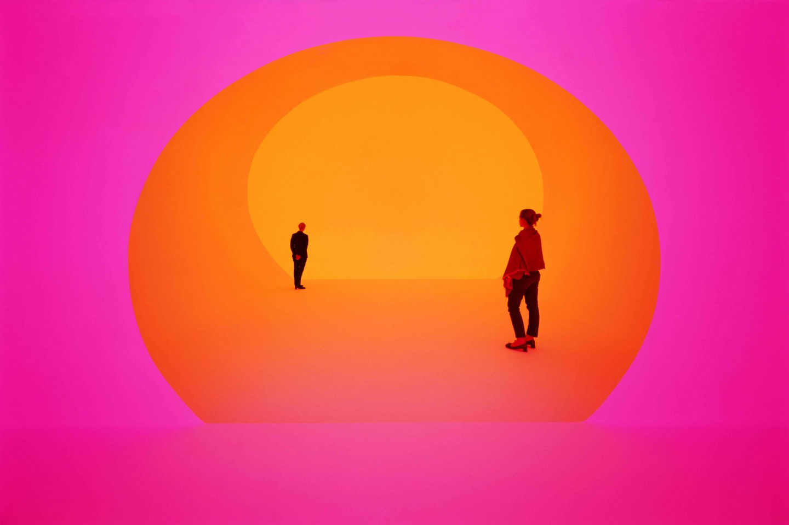
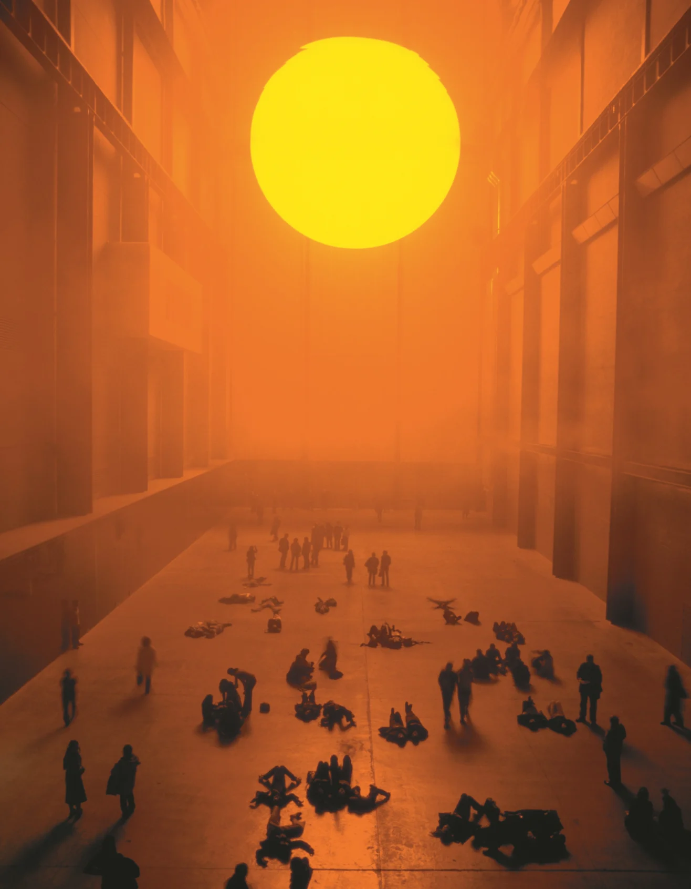
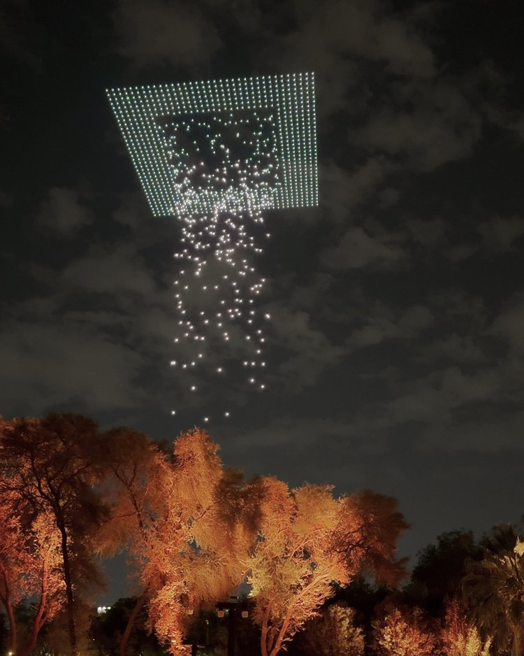
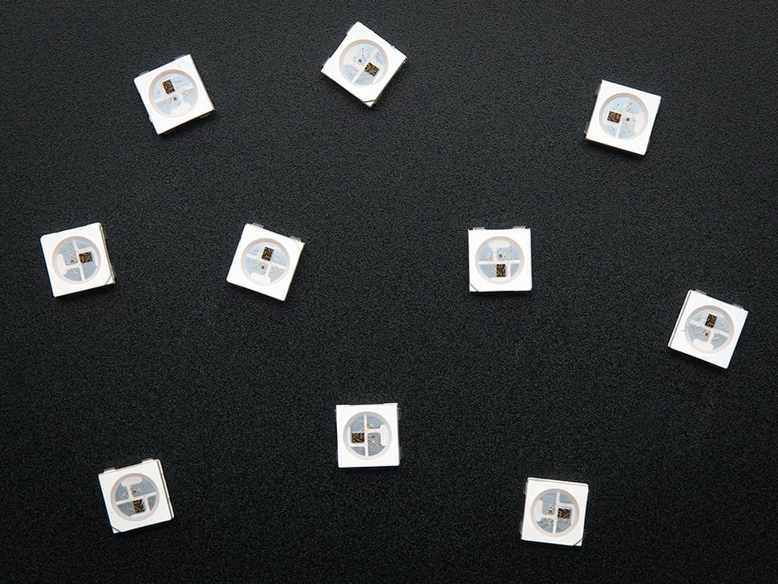
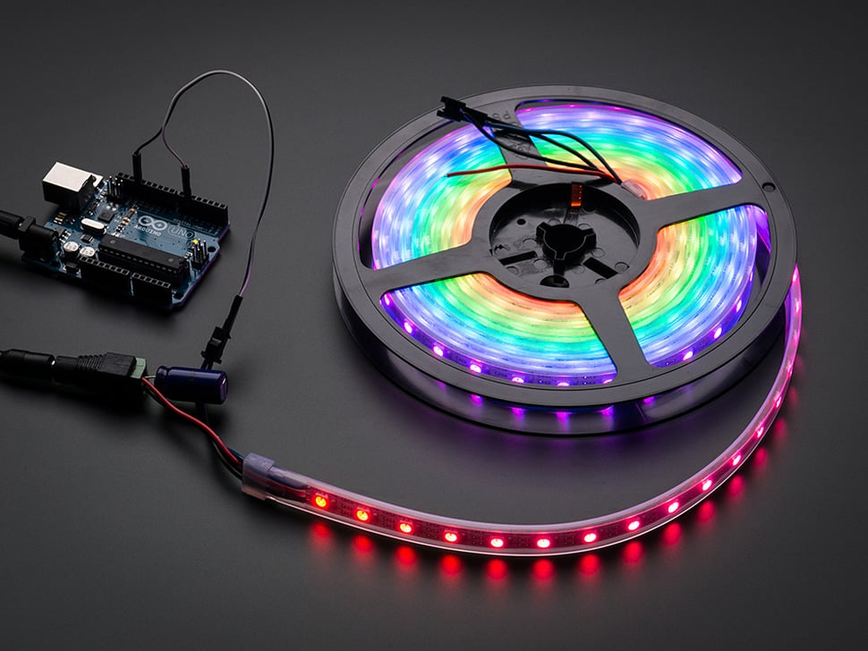
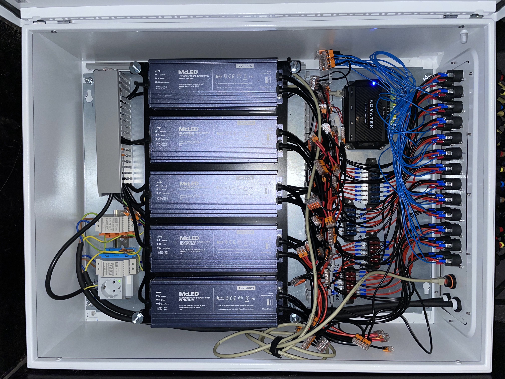

Light as a Physical Material
Concept, Control & Expression
How to Make Mechanism of Control - 10.06.26
Learning Goals
- Explore expressive use of light (LEDs, commercial lamps, ...)
- Get inspired by light-based artworks
- Understand technical foundations and control
What can light express?
How do we read light patterns?
Light as a Medium




Not famous yet, don't have such budgets, so...
We use individually controllable lamps & LEDs
But before we should look at colour

The use of colour to...
- evoke emotion
- control the focus of the audience
- express contrast, rhythm and intensity


In cinema, light tells the audience what to feel before any dialogue is spoken.


Tadao Andō
He uses his built space as a canvas for (mostly) natural light and the shadows it creates.
By violently restricting the light, Ando makes a single beam feel sacred.
Restraint in your artwork is often louder than blinding brightness.

Jim Campbell
He focuses on ultra-low-definition works and unconventional diffusion methods to emphasise motion patterns.
Building screens that recontextualise movement rather than relying solely on light.

Random International & Wayne McGregor
Future Self
While Jim Campbell mostly uses 2D-to-2.5D (topographic) matrices of LEDs, Random International has created full 3D grids of individually addressable LEDs to rethink how we view motion and the body in space.

United Visual Artists
Aether
1500 Drones equipped with LEDs create a large-scale 3D effect by synchronising the drones and lights in the sky.
A dynamic shape canvas based on motion and controlled light.

teamLab
Hidden Traces of Rice Terraces
Colourful ambient lighting for space-making and (inter-)active single light fixtures are used to emphasise the forms of nature and reshape the perception of life's continuity.

NONOTAK
Highway LDN Eclipse
Thinking in addressable LED "strips" can be an approach to create different motion patterns.
Maybe less flashy but potentially stronger in its artistic expression?
What to pay attention to with LEDs?
Technology overview

Addressable LEDs - Beyond On/Off
- RGB or RGBW LEDs with control chips
- Popular types: WS2812B (NeoPixel), SK6812, APA102
Why Addressable?
- Each pixel can have an individual colour + brightness
- Controlled over a single or dual data line




Hardware Basics to Consider
- different chips
- Power: voltage, current, injection points
- Signal: one- or two-wire data, resilience, chaining limits
Pay extra attention to the voltage of your LED strip!!
Comparing LED Strip Types
| Chip | Data Line | Refresh Rate | Pros | Cons |
|---|---|---|---|---|
| WS2812B | Single wire | ~400Hz | Simple, common | Needs strict timing, can flicker |
| APA102/107 | Clock + Data | ~20kHz | Flicker-free, fast | More wiring |
| SK6812 | Single wire | Similar to WS2812 | RGBW available | Needs strict timing, can flicker |
Arduino Control Overview
- Digital signal chain
- MCU controls the data and timing for digital LEDs
- Signal → Pixel → Timing
Arduino LED Libraries Overview
| Library | Ease | Features | Notes |
|---|---|---|---|
| NeoPixel | Easy | Basic effects | Blocking |
| FastLED | Medium | Palettes, non-blocking | Recommended |
Timing & Performance
- Frame rate bottlenecks (esp. WS2812B)
- Blocking vs non-blocking animations
- Serial + LED timing challenges
Calculating LED Power Requirements
Power for Pixel Control
- Each RGB LED draws up to 60mA (20mA per color)
- Formula:
Total Current (A) = Number of LEDs × 0.06
Example for 150 LEDs :
150 × 0.06 = 9A @ 5V = 45W
Rules for wire thickness
How to chose which cables to use
1. The Core Concept: "Lower is Thicker"
Wire thickness is often described in AWG (American Wire Gauge) in the EU in square millimeters.
The lower the number, the thicker the wire.
- 28 AWG is like a human hair (fragile, low power)
- 18 AWG is like a drinking straw (robust, high power)
2. The Golden Rule: Brains vs. Muscle
Divide every project into two categories:
The Brains (Data & Logic): Any wire sending a signal (sensors, PWM to a servo, data to an LED strip). These draw almost zero current. Use any wire you want.
The Muscle (Power & Ground): Any wire actively powering a motor, solenoid, or LED strip. These require actual current. This is where gauge matters.
3. The "Breadboard Limit" (The 1-Amp Rule)
Standard breadboard jumper wires are usually 28 AWG or 26 AWG.
The Rule: A standard jumper wire can safely carry a maximum of 1 Amp of current before it gets hot enough to melt the plastic breadboard.
What is 1 Amp?
- 1 Micro Servo (SG90) under heavy load.
- 1 Small Stepper Motor (28BYJ-48).
- ~16 NeoPixels (WS2812B) at maximum brightness (full white).
4. The "Rule of 4s" for Selecting AWG
Wire thickness rule of thumb
Amps:
0 – 1 Amp 24 AWG (standard jumpers)
Use Case: Single servos, small sensors, a few LEDs.1 – 4 Amps 20 AWG
Use Case: A 1-meter strip of NeoPixels (60 LEDs), 2-3 servos running at once, or a small solenoid.4 – 10 Amps 16 AWG
Use Case: Massive LED matrixes, powerful stepper motors, or high-torque DC motors.
5. The Distance Tax (Voltage Drop)
Electricity gets tired. The longer the wire, the more resistance it has.
The Rule:
If your power wire needs to be longer than 1 meter (e.g., running from a power supply on the floor up to a kinetic sculpture on the ceiling), step down one gauge size (make it thicker).
Example:
If you need 20 AWG for a 2-Amp load, but the wire is 2 meters long, use 18 AWG instead.
Power Supplies
Best practices
- Use a power supply that has more amperage than needed for "headroom"
- Feed power at both ends of a long LED strip
- Use a thicker wire gauge to reduce voltage drop for long cables
Microcontrollers + LEDs Limitations
- Memory limits: Arduino UNO has 2KB RAM our Pico 2W has 520 KB RAM
- WS2812B = 3 bytes/pixel → Max ≈ 600 LEDs
- Timing sensitive libraries (FastLED, Adafruit NeoPixel)
Best practice for large LED installations
- Offload logic to external controllers for large installs
- Example: Advatek or Enttec are companies that produce LED Pixel Controllers

Demo 1: Colour via Serial Input
Demo 2: Reactive Sensor Input
Task "MOOD"
- Choose a mood
- Express it with 10, 30, 60 LEDs
- Use colour, rhythm, intensity
- Optionally: sensor input
Reference Mood Examples
- Calm → slow fades, blues
- Anticipation → pulsing whites
- Anger → sharp red flicker
- Nostalgia → soft, warm tones
Bonus Task (optional)
Responsive Ambience
- Use a sensor to control LED behaviour
- Data → Expression
- Real-world examples: ambient light, attention cues